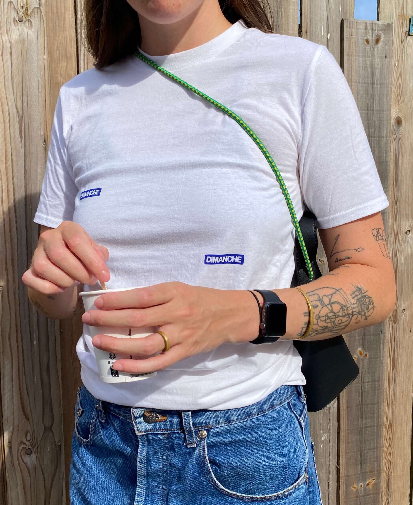

El tamaño de la letra en esta página representa el entusiasmo que sentimos por lo que hacemos: muy grande.
Somos Emily y Jesús y los domingos nos sentimos como los Cazadores de Tesoros de Discovery Max. Los domingos vamos a los rastros franceses a encontrar y comprar objetos. Pensamos que todos estos objetos son dignos de una segunda vida, solo necesitan ser rescatados.


Somos novios y socios y socios y novios y la distinción entre uno y el otro a veces se nubla, pero it’s fine for us. Disfrutamos haciéndolo juntos y tras un año haciéndolo nos hemos dado cuenta de que Dimanche no podríamos hacerlo el uno sin el otro, esto es cosa de dos.
Todo esto empezó en octubre de 2023, cuando tras comprar una magnífica bicicleta en un rastro dijimos que esto no podía seguir así, que había demasiados objetos chulísimos que se merecían un nuevo hogar. Y como beauty is in the eye of the beholder, y nosotros tenemos facilidad para encontrar belleza, decidimos crear Dimanche.
La elección del nombre fue sencilla: vamos a los rastros franceses el domingo y dimanche es domingo en francés.
Empezamos sin mucha esperanza pero con muchas ganas de comprobar si toda esta idea loca que se nos había ocurrido en un paseo en bicicleta tenía sentido.
Un año más tarde y tras más de 130 objetos vendidos podemos afirmar que sí, que por lo que parece hay muchos más como nosotros que aprecian la belleza de los objetos que rescatamos.
Durante este primer año hemos hecho merch (todo serigrafiado por nosotros mismos), sellos e incluso nuestro propio objeto para conmemorar nuestro primer aniversario (puedes encontrarlo en la tienda).
Cuando comenzamos compramos un montón de cajas y papel de burbujas. Resulta que apenas hemos utilizado las cajas que compramos: en Dimanche no hay dos objetos iguales y cada uno tiene una forma. Así que con este escenario, la solución que nos queda es reutilizar cajas (muchas cajas) y en muchos casos, hacer nuestra propia caja a partir de cartón. Definitivamente nuestras cajas son especiales.
¿Nos vemos este domingo?